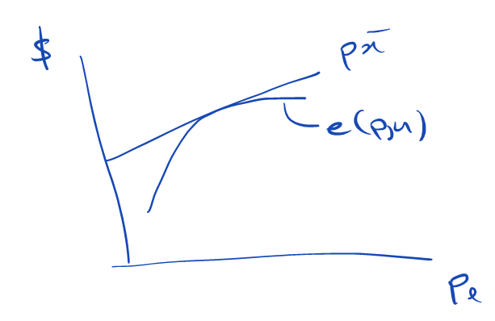

3 Consumer Theory
Consumer theory studies how rational consumer chooses what bundle of goods to consume.
Rational has a new meaning now: unbounded rationality!
Special case of general theory of choice.
Key new assumption: choice sets defined ONLY by prices of each of n goods, and income (or wealth).
3.1 Consumer Problem (CP)
\max_{x \in \mathbb{R}_+^n} \ \ \ u\left(x\right)\ \\ s.t.\ \ \ p \cdot x \le w
Restrictions that don’t show up are the most important ones!
Notation: p\in\mathbb{R}^n, x\in\mathbb{R}^n, p \cdot x=p_1x_1+\ldots+p_nx_n (inner product)
- Consumer chooses consumption vector x=\left(x_1,\ldots,x_n\right)
- x_k is consumption of good k
- Each unit of good k costs p_k
- p \cdot x is total expenditure
- Total available income is w
Now discuss some implicit assumptions underlying (CP).
First: prices are Linear
Each unit of good k costs the same.
No quantity discounts or supply constraints.
Consumer’s choice set (or budget set) is:
B(p,w)=\left\{x\in\mathbb{R}_+^n:p\cdot x\le w\right\}
Set is defined by single line (or hyperplane): the budget line p\cdot x=w Assume p\geq0.
(If we’re talking about bad things, so that price cannot be positive, think of garbage collection with positive price)
Second: Goods are Divisible
x\in\mathbb{R}_+^n and consumer can consume any bundle in budget set
Can model indivisibilities by assuming utility only depends on integer part of x.
Third: Set of Goods is Finite ({n}<\infty)
This is not obvious: think of a dynamic economy with no known final date.
Debreu (1959): A commodity is characterized by its physical properties, the date at which it will be available, and the location at which it will be available.
In practice, set of goods suggests itself naturally based on context.
3.2 Marshallian Demand
The solution to the (CP) is called the Marshallian demand (or Walrasian demand).
May be multiple solutions, so formal definition is:
Definition 3.1 The Marshallian demand correspondence x: \mathbb{R}_+^n\times\mathbb{R}\rightrightarrows\mathbb{R}_+^n is defined by
\begin{aligned} x(p,w) &= argmax_{x \in B(p,w)} \ u(x) \\ &= \left\{z\in B(p,w):u(z)=\max_{x\in B(p,w)} \ u(x)\right\} \end{aligned}
Heavy notation for simple idea!
Domain is \mathbb{R}_+^n\times\mathbb{R}: n prices, one level of income.
Start by deriving basic properties of budget sets and Marshallian demand.
Example: Cobb-Douglas Marshallian demand: u\left(x_1,x_2\right)=x_1^\alpha x_2^{1-\alpha}
x_1\left(p_1,p_2,w\right)=\alpha\frac{w}{p_1} \\ x_2\left(p_1,p_2,w\right)=\left(1-\alpha\right)\frac{w}{p_2}
3.3 Budget Sets
Theorem 3.1 Budget sets are homogeneous of degree 0 : that is, for all \lambda>0, B(\lambda\ p,\lambda\ w)=B(p,w).
\begin{matrix}B(\lambda p,\lambda w)&\ =\left\{x\in\mathbb{R}_+^n\mid\lambda p\cdot x\le\lambda w\right\}\\&\ =\left\{x\in\mathbb{R}_+^n\mid p\cdot x\le w\right\}=B(p,w).\\\end{matrix} Nothing changes if scale prices and income by same factor.
QED.
Theorem 3.2 If p\gg0, then B(p,w) is compact.
A subset of \mathbb{R}^n is compact if and only if it is closed and limited.
For any p,B(p,w) is closed. (Notice the weak inequality in the definition of B.)
If p\gg0, then B(p,w) is also bounded.
QED.
3.4 Marshallian Demand: Existence
Theorem 3.3 If u is continuous and p\gg0, then (CP) has a solution.
(That is, x(p,w) is non-empty.)
A continuous function on a compact set attains its maximum (Weirstrass theorem).
QED.
3.5 Marshallian Demand: Uniqueness?
The Marshallian Demand needs not be unique
Example: perfect substitutes – write it out as an exercise.
Generally, the Marshallian demand is a correspondence, or a set-valued function: for each \left(p,w\right), it associates a set of optimal choices x\left(p,w\right).
We’ve seen before the following results (we’ll just rewrite them in our context):
Since the budget set is convex, the Marshallian demand is a convex correspondence if preferences are convex.
The Marshallian demand is unique (that is, a function) if preferences are strictly convex.
3.6 Marshallian Demand: Homogeneity of Degree 0
Theorem 3.4 For all \lambda>0 , x(\lambda\ p,\lambda\ w) = x(p,w).
B(\lambda\ p,\lambda\ w)=B(p,w), so (CP) with prices \lambda\ p and income \lambda\ w is same problem as (CP) with prices p and income w, since utility function is not affected by \lambda.
QED.
3.7 Marshallian Demand: “Continuity”
Theorem 3.5 Assume u is continuous and strictly quasi-concave (that is, preferences are strictly convex). Then the Marshallian demand x(p,w) is a continuous function.
More generally: if u is continuous (but not necessarily quasi-concave), then the Marshallian demand is upper hemicontinuous.
Follows directly from the theorem of the maximum.
3.8 Marshallian Demand: Walras’ Law
Reminder: Preferences are locally non-satiated if for all x\in X and all \varepsilon > 0, there exists y \succ x such that y\in B_\varepsilon\left(x\right)=\left\{y\in X:d\left(x,y\right)<\varepsilon\right\}.
Theorem 3.6 If preferences are locally non-satiated, then for every (p,w) and every x \in x(p,w), we have p \cdot x = w.
If p \cdot x < w, then there exists \varepsilon > 0 such that B_\varepsilon(x)\subseteq B(p,w). By local non-satiation, for every \varepsilon>0 there exists y\in B_\varepsilon(x) such that y \succ x.
Hence, there exists y \in B(p,w) such that y \succ x.
But then x \notin x(p,w), that is, x is not an optimal choice: contradiction.
QED.
Walras’ Law lets us rewrite (CP) as
\max_{x \in \mathbb{R}_+^n} \ \ u(x) \\ \mathrm{\ s.t.\ }p\cdot x=w\\
3.9 Marshallian Demand: Differentiable Demand
Implications if demand is single-valued and differentiable:
A proportional change in all prices and income does not affect demand: \sum_{j=1}^{n}p_j\frac{\partial}{\partial p_j}x_i(p,w)+w\frac{\partial}{\partial w}x_i(p,w)=0
A change in the price of one good does not affect total expenditure: \sum_{j=1}^{n} p_j\frac{\partial}{\partial p_i}x_j(p,w)+x_i(p,w)=0.
A change in income leads to an identical change in total expenditure: \sum_{i=1}^{n} p_i\frac{\partial}{\partial w}x_i(p,w)=1
3.10 The Indirect Utility Function
Can learn more about set of solutions to (CP) (Marshallian demand) by relating to the value of (CP).
Value of (CP) = welfare of consumer facing prices p with income w.
The value function of (CP) is called the indirect utility function.
Definition 3.2 (The Indirect Utility Function) v:\mathbb{R}_+^n\times\mathbb{R}\rightarrow\mathbb{R} is defined by v(p,w) = \max_{x \in B(p,w)} u(x).
So we have \left(p,w\right)\longrightarrow\ x\left(p,w\right)\longrightarrow\ u\left(x\left(p,w\right)\right)=\ v(p,w).
Notice that demand x is the image of \left(p,w\right) and also the argument of u.
Example: Cobb-Douglas indirect utility function:
u\left(x_1,x_2\right)=x_1^\alpha x_2^{1-\alpha}
x_1\left(p_1,p_2,w\right)=\alpha\frac{w}{p_1} \\
x_2\left(p_1,p_2,w\right)=\left(1-\alpha\right)\frac{w}{p_2} \\
v\left(p_1,p_2,w\right)=\left(\alpha\frac{w}{p_1}\right)^\alpha\cdot\left(\left(1-\alpha\right)\frac{w}{p_2}\right)^{1-\alpha}=w\left(\frac{\alpha}{p_1}\right)^\alpha\cdot\left(\frac{\left(1-\alpha\right)}{p_2}\right)^{1-\alpha}
In our context, the Theorem of the Maximum implies:
Marshallian demand is upper hemicontinuous (if it’s a function, it’s continuous)
Indirect utility is continuous
3.11 Indirect Utility Function: Properties
Theorem 3.7 The indirect utility function has the following properties:
Homogeneity of degree 0: for all \lambda>0, v(\lambda\ p,\lambda\ w)=v(p,w).
Continuity: if u is continuous, then v is continuous on \{(p,w):p\gg0,w\geq0\}.
Monotonicty: v(p,w) is non-increasing in p and non-decreasing in w. If p\gg0 and preferences are locally non-satiated, then v(p,w) is strictly increasing in w.
Quasi-convexity: for all \bar{v} \in R, the set \{(p,w):v(p,w)\} \leq \bar{v} \} is convex. (Consumer is worse off at average prices/income.)
Follows from homogeneity of degree zero of Marshallian demand.
Follows directly from the Theorem of the Maximum.
Left as an exercise.
Pick two elements in the domain of v: \left(p,w\right) and \left(p^\prime,w^\prime\right)
Assume:
v\left(p,w\right)\le\bar{v}
v\left(p^\prime,w^\prime\right)\le\bar{v}
Define \left(p^{\prime\prime},w^{\prime\prime}\right)=\alpha\cdot\left(p,w\right)+\left(1-\alpha\right)\cdot\left(p^\prime,w^\prime\right)
We need to show that v\left(p^{\prime\prime},w^{\prime\prime}\right)\le\bar{v}
We will show something stronger: for all x such that p^{\prime\prime}\cdot\ x^{\prime\prime}\le\ w^{\prime\prime}, one has u\left(x\right)\le\bar{v}.
Use the definition of \left(p^{\prime\prime},w^{\prime\prime}\right):
p^{\prime\prime}\cdot\ x^{\prime\prime}\le\ w^{\prime\prime}\Leftrightarrow\left(\alpha p+\left(1-\alpha\right)p^\prime\right)\cdot\ x\le\alpha\ w+\left(1-\alpha\right)w^\prime This holds if and only either p\cdot\ x\le\ w of p^\prime\cdot\ x\le\ w^\prime.
Then we have: p\cdot\ x\le\ w\Rightarrow\ u\left(x\right)\le\ v\left(p,w\right)\le\bar{v} p^\prime\cdot\ x\le\ w^\prime\Rightarrow\ u\left(x\right)\le\ v\left(p^\prime,w^\prime\right)\le\bar{v}
In any case, u\left(x\right)\le\bar{v}, as we wanted to show.
QED.
Interpretation of quasi-convexity: consumer prefers extreme prices/income than average ones.
Extreme prices allow consumers to explore substitution: something desirable must be cheap enough.
(Income is one dimensional and hence it follows immediately that the average of two income levels is lower than the highest of them.)
GRAPHIC
3.12 Indirect Utility Function: Derivatives
When indirect utility function is differentiable, its derivatives are very interesting.
Q: When is indirect utility function differentiable? A: When u is (continuously) differentiable and Marshallian demand is unique.
Theorem 3.8 Suppose (1) u is locally non-satiated and continuously differentiable, and (2) Marshallian demand is unique in an open neighborhood of (p,w) with p\gg0 and w\>0. Then v is differentiable at (p,w).
We’ll skip the proof. For details if curious, see Milgrom and Segal (2002), “Envelope Theorems for Arbitrary Choice Sets.”
Or check chapters 3 and 4 in Stokey and Lucas (1989).
Furthermore, letting x=x(p,w), the derivatives of v are given by:
\frac{\partial}{\partial w} v(p,w) = \frac{1}{p_j}\frac{\partial}{\partial x_j}u(x)
and
\frac{\partial}{\partial p_i}v(p,w)=-\frac{x_i}{p_j}\frac{\partial}{\partial x_j}u(x),
where j is any index such that x_j>0.
- Suppose consumer’s income increases by $1.
- Should spend this dollar on any good that gives biggest “bang for the buck.”
- Bang for spending on good j equals \frac{1}{p_j}\frac{\partial u}{\partial x_j}: can buy \frac{1}{p_j} units, each gives utility \frac{\partial u}{\partial x_j}.
- Finally, x_j>0 for precisely those goods that maximize bang for buck. \Longrightarrow marginal utility of income equals \frac{1}{p_j}\frac{\partial u}{\partial x_j}, for any j with x_j>0.
3.13 Indirect Utility Function: Derivatives
\frac{\partial}{\partial w}v(p,w) =\frac{1}{p_j}\frac{\partial}{\partial x_j}u(x) \\ \frac{\partial}{\partial p_i}v(p,w) =-\frac{x_i}{p_j}\frac{\partial}{\partial x_j}u(x)
Suppose price of good i increases by $1.
This effectively makes consumer x_i poorer.
Just saw that marginal effect of making \$1 poorer is -\frac{1}{p_j}\frac{\partial u}{\partial x_j}, for any j with x_j>0.
\Longrightarrow marginal disutility of increase in p_i equals -\frac{x_i}{p_j}\frac{\partial u}{\partial x_j}, for any j with x_j>0.
3.14 Kuhn-Tucker Theorem
Theorem 3.9 (Kuhn-Tucker) Let f: \mathbb{R}^n \rightarrow \mathbb{R} and g_i : \mathbb{R}^n \rightarrow \mathbb{R} be continuously differentiable functions (for some i \in {1, \ldots, I}), and consider the constrained optimization problem
\max_{x\in\mathbb{R}^n} \ \ \ f(x) \\ s.t.\ \ \ g_i(x)\geq0 \mathrm{\ for\ all\ } i
If x ^ \ast is a solution to this problem (even a local solution) and a condition called constraint qualification is satisfied at x ^ \ast, then there exists a vector of Lagrange multipliers \lambda= \left(\lambda_1,\ldots,\lambda_l\right) such that
\nabla f(x^\ast) + \sum_{i=1}^{l} \lambda_i \nabla g_i (x^\ast) = 0 and
\lambda_i\geq0 \ \ \mathrm{and} \ \ \lambda_i g_i(x^\ast)=0\mathrm{\ for\ all\ }i
3.15 Kuhn-Tucker Theorem: Comments
- Any local solution to constrained optimization problem must satisfy first-order conditions of the Lagrangian
\mathcal{L}(x)=f(x)+\sum_{i=1}^{l}\lambda_i g_i(x)
- Condition that \lambda_i g_i(x^\ast) = 0 for all i is called complementary slackness.
- Says that multipliers on slack constraints must equal 0.
- Consistent with interpreting \lambda_i as marginal value of relaxing constraint i.
- There are different versions of constraint qualification. Simplest version: vectors \nabla g_i\left(x^\ast\right) are linearly independent for binding constraints.
Exercise: check that constraint qualification is always satisfied in the (CP) when p \gg 0, w > 0, and preferences are locally non-satiated.
3.16 Lagrangian for (CP)
For two goods:
\mathcal{L}\left(x_1,x_2\right)=u\left(x_1,x_2\right)+\lambda\left[w-p_1\cdot x_1-p_2\cdot x_2\right]+\mu_1x_1++\mu_2x_2
Generally:
\mathcal{L}(x)=u(x)+\lambda[w-p\cdot x]+\sum_{k=1}^{n}\mu_k x_k
\lambda \geq 0 is multiplier on budget constraint. \mu_k \geq 0 is multiplier on the constraint x_k \geq 0.
FOC with respect to x_i:
\frac{\partial u}{\partial x_i}+\mu_i=\lambda p_i
Complementary slackness: \mu_i=0 if x_i\>0. So:
\frac{\partial u}{\partial x_i} = \lambda p_i \mathrm{\ if\ } x_i>0 \\ \frac{\partial u}{\partial x_i} \le \lambda p_i \mathrm{\ if\ }\ x_i=0
What’s the intuition of \frac{\partial u}{\partial x_i}<\lambda p_i?
Implication: marginal rate of substitution \frac{\partial u}{\partial x_i}/ \frac{\partial u}{\partial x_j} between any two goods consumed in positive quantity must equal the ratio of their prices p_i/p_j.
In other words: slope of indifference curve between goods i and j must equal slope of budget line.
Intuition: equal “bang for the buck” \frac{1}{p_i}\frac{\partial u}{\partial x_i} among goods consumed in positive quantity.
3.17 Back to Derivatives of v
When v is differentiable, we have the following result:
Theorem 3.10 \frac{\partial v}{\partial w}=\lambda \ \ \ (\mathrm{marginal\ utility\ of\ income})
\frac{\partial v}{\partial p_i}=-\lambda x_i \ \ \ (\mathrm{marginal\ disutility\ of\ price})
- For the first part:
Without loss of generality, take only two goods: x=\left(x_1,x_2\right), p=\left(p_1,p_2\right).
Then: v\left(p_1,p_2,w\right)=u\left(x_1\left(p_1,p_2,w\right),x_2\left(p_1,p_2,w\right)\right)
Take the derivative with respect to income w:
\frac{\partial v}{\partial w}=\frac{\partial u}{\partial x_1}\cdot\frac{\partial x_1}{\partial w}+\frac{\partial u}{\partial x_2}\cdot\frac{\partial x_2}{\partial w}
But \frac{\partial u}{\partial x_i}=\lambda p_i.
Rewrite the previous equation:
\frac{\partial v}{\partial w}=\lambda p_1\cdot\frac{\partial x_1}{\partial w}+\lambda p_2\cdot\frac{\partial x_2}{\partial w}=\lambda\cdot\left[p_1\cdot\frac{\partial x_1}{\partial w}+p_1\cdot\frac{\partial x_1}{\partial w}\right]
We also know that p_1x_1+p_2x_2=w for all w.
This allows us to differentiate both sides with respect to w, and get:
p_1\cdot\frac{\partial x_1}{\partial w}+p_2\cdot\frac{\partial x_2}{\partial w}=1
This is exactly the term in square brackets in the previous equation, which becomes:
\frac{\partial v}{\partial w}=\lambda p_1\cdot\frac{\partial x_1}{\partial w}+\lambda p_1\cdot\frac{\partial x_1}{\partial w}=\lambda\cdot{\underbrace{\left[p_1\cdot\frac{\partial x_1}{\partial w}+p_1\cdot\frac{\partial x_1}{\partial w}\right]}}_1=\lambda
In short: \frac{\partial v}{\partial w}=\lambda
- For the second part:
v\left(p_1,p_2,w\right)=u\left(x_1\left(p_1,p_2,w\right),x_2\left(p_1,p_2,w\right)\right)+\lambda^\ast\cdot\left[w-p_1x_1-p_2x_2\right] This holds because we always have \lambda^\ast\cdot\left[w-p_1x_1-p_2x_2\right]=0 (Kuhn-Tucker).
Differentiate with respect to p_1:
\frac{\partial v}{\partial p_1}=\frac{\partial u}{\partial x_1}\cdot\frac{\partial x_1}{\partial p_1}+\frac{\partial u}{\partial x_2}\cdot\frac{\partial x_2}{\partial p_1}+\frac{\partial\lambda}{\partial p_1}\cdot \underbrace{\left[w-p_1x_1-p_2x_2\right]}_{0}-\lambda\cdot\left[x_1+p_1\cdot\frac{\partial x_1}{\partial p_1}+p_2\cdot\frac{\partial x_2}{\partial p_1}\right]
Collect terms to get:
\frac{\partial v}{\partial p_1}=\frac{\partial x_1}{\partial p_1}\cdot \underbrace{\left[\frac{\partial u}{\partial x_1}-\lambda p_1\right]}_{0}+\frac{\partial x_1}{\partial p_1}\cdot \underbrace{\left[\frac{\partial u}{\partial x_1}-\lambda p_1\right]}_{0}-\lambda x_1=-\lambda x_1 QED.
These are applications of the envelope theorem: ignore indirect effect of changes in parameters (that is, impact through changes in optimal decisions).
3.18 Envelope Theorem
Theorem 3.11 (Envelope Theorem) For \Theta\subseteq\mathbb{R}, let f:X\times\Theta\rightarrow\mathbb{R} be a differentiable function, let V(\theta)=\max\_{x\in X} f(x,\theta), and let X^\ast(\theta)={x\in X:f(x,\theta)=V(\theta)}. If V is differentiable at \theta then, for any x^\ast\in X^\ast(\theta), V\prime(\theta)=\frac{\partial}{\partial\theta}f\left(x^\ast,\theta\right).
3.19 Back again to Derivatives of v
\begin{matrix}&\frac{\partial v}{\partial w}=\lambda\\&\frac{\partial v}{\partial p_i}=-\lambda x_i\\\end{matrix}
Combining with \frac{\partial u}{\partial x_j} = \lambda p_j if x_j > 0, obtain
\begin{matrix}\frac{\partial v}{\partial w}&\ =\frac{1}{p_j}\frac{\partial u}{\partial x_j}\\\frac{\partial v}{\partial p_i}&\ =-\frac{x_i}{p_j}\frac{\partial u}{\partial x_j}\\\end{matrix}
for any j with x_j > 0.
This proves above theorem on derivatives of v.
We’ve already seen the intuition.
3.20 Roy’s Identity
Under conditions of last theorem, if x_i(p,w) > 0 then
x_i(p,w)=-\frac{\frac{\partial}{\partial p_i}v(p,w)}{\frac{\partial}{\partial w}v(p,w)}
3.21 Key Facts about (CP), Assuming Differentiability
- Consumer’s marginal utility of income equals multiplier on budget constraint: \frac{\partial v}{\partial w}=\lambda.
- Marginal disutility of increase in price of good i equals -\lambda x_i.
- Marginal utility of consumption of any good consumed in positive quantity equals \lambda p_i.
3.22 The Expenditure Minimization Problem
In (CP), consumer chooses consumption vector to maximize utility subject to maximum budget constraint.
Also useful to study “dual” problem of choosing consumption vector to minimize expenditure subject to minimum utility constraint.
This expenditure minimization problem (EMP) is formally defined as:
\min_{x \in \mathbb{R}_+^n} \ \ \ p \cdot x \\ \mathrm{\ s.t.\ } \ \ \ u(x)\geq u\\
3.23 Hicksian Demand
Hicksian demand is the set of solutions x = h(p,u) to the EMP.
The expenditure function is the value function for the EMP:
e(p,u)=\min_{x\in\mathbb{R}+^n (x)\geq u} p\cdot x
e(p,u) is income required to attain utility u when facing prices p. Each element of h(p,u) is a consumption vector that attains utility u while minimizing expenditure given prices p.
Hicksian demand and expenditure function relate to EMP just as Marshallian demand and indirect utility function relate to CP.
Exercise: find the Hicksian demand and the expenditure function for the Cobb-Douglas utility function.
3.24 Why Should we Care about the EMP?
For this course, 2 reasons:
- Hicksian demand useful for studying effects of price changes on “real” (Marshallian) demand.
In particular, Hicksian demand is key concept needed to decompose effect of a price change into income and substitution effects.
- Expenditure function important for welfare economics.
In particular, use expenditure function to analyze effects of price changes on consumer welfare.
3.25 Hicksian Demand: Properties
Theorem 3.12 (MWG 3E3) Assume X=\mathbb{R}+^n, preferences are locally non-satiated, and p\gg0. Then the Hicksian demand satisfies:
Homogeneity of degree 0 in \mathbf{p}: for all \lambda>0, h(\lambda p,u)=h(p,u).
No excess utility: if u(\cdot) is continuous and p\gg0, then u(x)=u for all x\in h(p,u).
Convexity/uniqueness: if preferences are convex, then h(p,u) is a convex set. If preferences are strictly convex and “no excess utility” holds, then h(p,u) contains at most one element.
Minimizing p\cdot x or \alpha p\cdot x yields the same result for any \alpha>0. QED.
The proof is by contradiction.
Assume by contradiction that at the solution, u(x) > u. Take x^\prime = \alpha x, for \alpha \in (0,1). The continuity of u implies that for \alpha close enough to one, u(x^\prime) > u, and px^\prime < px = w. That is, it is possible to find some x that respects the constraint and decreases expenditure. Contradiction. Hence one cannot have u(x) > u at the solution. QED.
- Left as an exercise.
3.26 Expenditure Function: Properties
Theorem 3.13 (MWG 3E2) The expenditure function satisfies:
Homogeneity of degree 1 in \mathbf{p}: for all \lambda>0, e(\lambda p,u)=\lambda e(p,u).
Continuity: if u(\cdot) is continuous, then e is continuous in p and u.
Monotonicity: e(p,u) is non-decreasing in p and non-decreasing in u. If “no excess utility” holds, then e(p,u) is strictly increasing in u.
Concavity in p: e is concave in p.
- For all \alpha>0, we know from the previous proposition that h(\lambda p,u)=h(p,u).
Then one may write:
e\left(\alpha p,u\right)=\left(\alpha p\right)h=\alpha \underbrace{\left(p\cdot h\right)}_{e\left(p,u\right)}=\alpha\cdot e\left(p,u\right)
Follows from the Maximum Theorem.
Show first that e\left(p,u\right) is strictly increasing in u
The proof is by contradiction. Assume by contradiction that e\left(p,u\right) is not strictly increasing in u. That is:
Let x^\prime and x^{\prime\prime} be optimal to achieve utility levels u^\prime and u^{\prime\prime}, respectively.
Assume u^{\prime\prime}>u^\prime and px^\prime\geq px^{\prime\prime}>0. This is the contradiction.
Build a new bundle: \widetilde{x}=\alpha x^{\prime\prime} for \alpha\in\left(0,1\right).
u\left(\right) is continuous implies that there is some \alpha close enough to one such that:
u\left(\widetilde{x}\right)>u^\prime px^\prime>p\widetilde{x}
Then x^\prime is not optimal to achieve u^\prime.
Let’s show now that e\left(p,u\right) is non-decreasing in p_l.
Take two price vectors p^{\prime\prime}, p^\prime such that p_l^{\prime\prime}\geq p_l^\prime, and, for all k\neq l, p_k^{\prime\prime}\geq p_k^\prime.
Let x^{\prime\prime} be optimal for prices p^{\prime\prime}. Then:
e\left(p^{\prime\prime},u\right)=p^{\prime\prime}x^{\prime\prime}\geq p^\prime x^{\prime\prime}\geq e\left(p^\prime,u\right)
The first inequality follows from the previous line: p_l^{\prime\prime}\geq p_l^\prime.
The second inequality follows from the definition of e\left(p,u\right).
It follows that e\left(.,.\right) is non-decreasing in p_l. QED.
- To show concavity, fix some level \bar{u}.
Define p^{\prime\prime}=\alpha p+\left(1-\alpha\right)p^\prime for some \alpha\in\left[0,1\right).
Let x^{\prime\prime} be optimal for p^{\prime\prime}. Then:
e\left(p^{\prime\prime},\bar{u}\right)=p^{\prime\prime}x^{\prime\prime}=\alpha px^{\prime\prime}+\left(1-\alpha\right)p^\prime x^{\prime\prime}\geq\alpha e\left(p,\bar{u}\right)+\left(1-\alpha\right)e\left(p^\prime,\bar{u}\right)
The inequality comes from the definition of e\left(p,u\right) and from the fact that u\left(x^{\prime\prime}\right)\geq\bar{u}.
QED.
3.27 Intuition for concavity
Start with \bar{p} and an optimal bundle \bar{x}.
If prices change to p but \bar{x} is fixed, new expenditure is p\bar{x}: linear in \bar{x}.
If consumer may adjust \bar{x} to minimize px, new expenditure cannot be larger.

3.28 Expenditure Function: Derivatives
Shephard’s Lemma: if Hicksian demand is single-valued, it coincides with the derivative of the expenditure function.
Theorem 3.14 If u(\cdot) is continuous and h(p,u) is single-valued, then the expenditure function is differentiable in p at (p,u), with derivatives given by
\frac{\partial}{\partial p_i}e(p,u)=h_i(p,u).
Intuition: If price of good i increases by $1, unique optimal consumption bundle now costs h_i(p,u) more.
Recall that
e(p,u)=\min\limits_{x(x)\geq u}; p \cdot x
Given that e is differentiable in p, envelope theorem implies that
\frac{\partial}{\partial p_i}e(p,u)=\frac{\partial}{\partial p_i}p \cdot h_i(p,u)=h_i(p,u) \text{ for any } x^\ast \in h(p,u).
3.29 Comparative Statics
Comparative statics are statements about how the solution to a problem change with the parameters.
(CP): parameters are (p,w), want to know how x(p,w) and v(p,w) vary with p and w.
(EMP): parameters are (p,u), want to know how h(p,u) and e(p,u) vary with p and u.
Turns out that comparative statics of (EMP) are very simple, and help us understand comparative statics of (CP).
3.30 The Law of Demand
“Hicksian demand is always decreasing in prices.”
Theorem 3.15 (Law of Demand) For every p,p^\prime \geq 0,x \in h(p,u), and x^\prime \in h(p^\prime,u), we have
(p^\prime - p)(x^\prime - x) \le 0
Example: if p^\prime and p only differ in price of good i, then
(p_i^\prime - p_i)(h_i(p^\prime,u) - h_i(p,u)) \le 0
Hicksian demand for a good is always decreasing in its own price.
Graphically, budget line gets steeper \Longrightarrow shift along indifference curve to consume less of good 1.
By definition:
p^{\prime\prime}h(p^{\prime\prime},u) \le p^{\prime\prime}h(p^\prime,u) \\ p^\prime h(p^\prime,u) \le p^\prime h(p^{\prime\prime},u)
Add these inequations:
p^{\prime\prime}h(p^{\prime\prime},u) + p^\prime h(p^\prime,u) \le p^{\prime\prime}h(p^\prime,u) + p^\prime h(p^{\prime\prime},u)
Factor out h(p^{\prime\prime},u) + p^\prime and h(p^\prime,u) \le p^{\prime\prime}:
(p^{\prime\prime} - p^\prime) \cdot h(p^{\prime\prime},u) + (p^\prime - p^{\prime\prime}) \cdot h(p^\prime,u) \le 0
Change (p^\prime - p^{\prime\prime}) for -(p^{\prime\prime} - p^\prime):
(p^{\prime\prime} - p^\prime) \cdot h(p^{\prime\prime},u) - (p^{\prime\prime} - p^\prime) \cdot h(p^\prime,u) \le 0
Now factor out (p^{\prime\prime} - p^\prime):
(p^{\prime\prime} - p^\prime) \cdot (h(p^{\prime\prime},u) - h(p^\prime,u)) \le 0
This is the law of demand.
QED
3.31 The Slutsky Matrix
If Hicksian demand is differentiable, can derive an interesting result about the matrix of price-derivatives
D_p h(p,u)=\begin{pmatrix} \frac{\partial h_1(p,u)}{\partial p_1}&\cdots&\frac{\partial h_n(p,u)}{\partial p_1}\ \\ \vdots&&\vdots\ \\ \frac{\partial h_1(p,u)}{\partial p_n}&\cdots&\frac{\partial h_n(p,u)}{\partial p_n}\ \end{pmatrix}
This is the Slutsky matrix.
A n \times n symmetric matrix M is negative semi-definite if, for all z \in \mathbb{R}^n, z \cdot M z \le 0.
Theorem 3.16 If h(p,u) is single-valued and continuously differentiable in p at (p,u), with p \gg 0, then the matrix D_p h(p,u) is symmetric and negative semi-definite.
Follows from Shephard’s Lemma \left(\frac{\partial}{\partial p_i}e(p,u)=h_i(p,u)\right) and Young’s Theorem.
3.32 The Slutsky Matrix
What’s economic content of symmetry and negative semi-definiteness of Slutsky matrix?
Negative semi-definiteness: differential version of law of demand.
Ex. if z=(0,\ldots,0,1,0,\ldots,0) with 1 in the j^{\text{th}} component, then z \cdot D_p h(p,u) z = \frac{\partial h_i(p,u)}{\partial p_i}, so negative semi-definiteness implies that \frac{\partial h_i(p,u)}{\partial p_i} \le 0.
Symmetry: derivative of Hicksian demand for good i with respect to price of good j equals derivative of Hicksian demand for good j with respect to price of good i.
Not true for Marshallian demand, due to income effects.
3.33 Relation between Hicksian and Marshallian Demand
Approach to comparative statics of Marshallian demand is to relate to Hicksian demand, decompose into income and substitution effects via Slutsky equation.
First, relate Hicksian and Marshallian demand.
Let’s ask a simple question: what’s the Marshallian demand x(p,w) evaluated at some exogenous utility level u?
At first, this seems nonsense: Marshallian demand is a function of prices p and income w, not of utility u.
In fact, utility is not even exogenous: it is endogenous when one solves for the Marshallian demand, which is computed exactly maximizing utility.
Yet, we can evaluate x(p,w) at any level of income w… that is, at any monetary value w.
So we can choose in particular w=e(p,u), since e(p,u) is a monetary value: it is the minimum expenditure to reach the exogenous utility level u.
Hence x(p,w) and w=e(p,u), so we can write x(p,e(p,u)): Marshallian demand as a function of some exogenous utility level u.
Next question: what’s the Marshallian demand evaluated at u?
Intuition is simple: it is simply the Hicksian demand: x(p,e(p,u))=h(p,u).
Analogously, we may write h(p,u)=h(p,v(p,w)): Hicksian demand as a function of income.
Then h(p,v(p,w))=x(p,w).
So these equalities hold for the solutions to UMP e EMP.
A similar reasoning applies to the value functions of these problems:
e(p,v(p,w)) = w \\ v(p,e(p,u)) = u If v(p,w) is the most utility consumer can attain with income w, then consumer needs income w to attain utility v(p,w).
If need income e(p,u) to attain utility u, then u is most utility consumer can attain with income e(p,u).
The next result formalizes these relationships.
Theorem 3.17 Suppose u(\cdot) is continuous and locally non-satiated. Then:
For all p \gg 0 and w \geq 0, x(p,w)=h(p,v(p,w)) and e(p,v(p,w))=w.
For all p \gg 0 and u \geq u(0), h(p,u)=x(p,e(p,u)) and v(p,e(p,u))=u.
Left as an exercise.
3.34 The Slutsky Equation
Theorem 3.18 Suppose u(\cdot) is continuous and locally non-satiated. Let p \gg 0 and w = e(p,u). If x(p,w) and h(p,u) are single-valued and differentiable, then, for all i,j,
\underbrace{\frac{\partial x_i(p,w)}{\partial p_j}}_{\text{total effect}} = \underbrace{\frac{\partial h_i(p,u)}{\partial p_j}}_{\text{substitution effect}} - \underbrace{\frac{\partial x_i(p,w)}{\partial w} x_j(p,w)}_{\text{income effect}}
For all i, h_i(p,u) = x_i(p, \underbrace{e(p,u)}_{w})
Since this holds for all goods i and for all prices, one may differentiate both sides with respect to some price p_j:
\frac{\partial h_i}{\partial p_j} = \frac{\partial x_i}{\partial p_j} + \frac{\partial x_i}{\partial w} \frac{\partial e}{\partial p_j}
But we know that \frac{\partial e}{\partial p_j} = h_j(p, v(p,w)) = x_j(p,w). Substitute into the previous equation to get:
\frac{\partial h_i}{\partial p_j} = \frac{\partial x_i}{\partial p_j} + \frac{\partial x_i}{\partial w} x_j(p,w)
QED
Intuition: If p_j increases, two effects on demand for good i:
- Substitution effect: \frac{\partial h_i(p,u)}{\partial p_j}
- Movement along original indifference curve.
- Response to change in prices, holding utility fixed.
- Income effect: - \frac{\partial x_i(p,w)}{\partial w} x_j(p,w)
- Movement from one indifference curve to another.
- Response to change in income, holding prices fixed.
3.35 Terminology for Consumer Theory Comparative Statics
Definition 3.3 Good i is a normal good if x_i(p,w) is increasing in w. It is an inferior good if x_i(p,w) is decreasing in w.
Definition 3.4 Good i is a regular good if x_i(p,w) is decreasing in p_i. It is a Giffen good if x_i(p,w) is increasing in p_i.
Definition 3.5 Good i is a substitute for good j if h_i(p,u) is increasing in p_j. It is a complement if h_i(p,u) is decreasing in p_j.
Definition 3.6 Good i is a gross substitute for good j if x_i(p,u) is increasing in p_j.
It is a gross complement if x_i(p,u) is decreasing in p_j.
3.36 Comparative Statics: Remarks
- Both the substitution effect and the income effect can have either sign.
- Substitution effect is positive for substitutes and negative for complements.
- Income effect is negative for normal goods and positive for inferior goods.
- By symmetry of Slutsky matrix, i is a substitute for j \Leftrightarrow j is a substitute for i.
- Not true that i is a gross substitute for j \Leftrightarrow j is a gross substitute for i.
- Income effects are not symmetric.